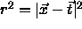
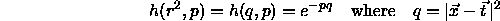
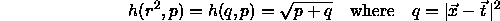
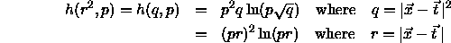

For the use of radial basis functions, three different activation functions h have been implemented. For computational efficiency the square of the distance

is uniformly used as argument for h. Also, an additional argument p has been defined which represents the bias of the hidden units. The vectors and
and  result from the activation and weights of
links leading to the corresponding unit. The following radial basis
functions have been implemented:
result from the activation and weights of
links leading to the corresponding unit. The following radial basis
functions have been implemented:



During the construction of three layered neural networks based on radial basis functions, it is important to use the three activation functions mentioned above only for neurons inside the hidden layer. There is also only one hidden layer allowed.
For the output layer two other activation functions are to be used:
Act_IdentityPlusBias activates the corresponding unit with the weighted sum of all incoming activations and adds the bias of the unit. Act_Logistic applies the sigmoid logistic function to the weighted sum which is computed like in Act_IdentityPlusBias. In general, it is necessary to use an activation function which pays attention to the bias of the unit.
The last two activation functions converge towards infinity, the first converges towards zero. However, all three functions are useful as base functions. The mathematical preconditions for their use are fulfilled by all three functions and their use is backed by practical experience. All three functions have been implemented as base functions into SNNS.
The most frequently used base function is the Gaussian function. For large distances r, the Gaussian function becomes almost 0. Therefore, the behavior of the net is easy to predict if the input patterns differ strongly from all teaching patterns. Another advantage of the Gaussian function is, that the network is able to produce useful results without the use of shortcut connections between input and output layer.